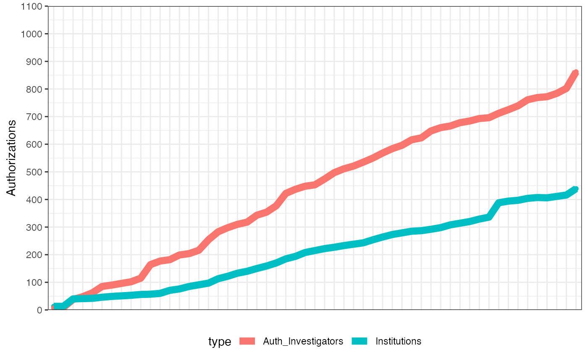

vignettes/databrary-vignette.Rmd
databrary-vignette.RmdDatabrary is a powerful tool for storing and sharing video data and documentation with other researchers. With the databraryapi package, it becomes even more powerful. Rather than interact with Databrary through a web browser, users can write their own code to download participant data or even specific files.
I wrote the Databrary API so I could find out what’s going on on the site, and eventually so I can streamline my own analysis and data sharing workflows. Let’s get started.
Access to Databrary requires prior registration and authorization from an institution. The authorization process requires formal agreement by an institution. But you’ll create an account ID (email) and secure password when you register. Then, when you log in with your new credentials, you’ll select an existing institution (if yours is on the list), a new institution (if yours isn’t), or an existing authorized investigator (if you are a student, postdoc, or collaborator) to request authorization from.
The purpose of a data repository is to enable researchers to store and share data. Databrary aims to go a step further by allowing researchers to interact with – to visualize and analyze – the data they or others have stored on the system. The databraryapi package includes several commands to make this easy to do.
Let’s begin by listing all of the sessions (dates and times when data was collected) in volume 1. Most of the databraryapi commands have default values so you can explore how the functions work. In this case, the list_sessions() command has a default value of vol_id = 1.
list_sessions() #> session_id top name #> 2 6256 NA Advisory Board Meeting #> 3 6257 NA Advisory Board Meeting #> 4 6540 NA Advisory Board Meeting #> 5 7821 NA SRCD Preconference Workshop #> 6 8460 NA Advisory Board Meeting #> 7 9224 NA Regional Workshop at NYU (Slides only) #> 8 9578 NA CDS Preconference Workshop #> 9 9807 TRUE Top-level materials #> 10 10068 NA Regional Workshop in Philadelphia #> 11 10991 NA Regional Workshop at Penn State #> 12 11362 NA Regional Workshop at University of Maryland, College Park #> 13 11660 NA ICIS16 Preconference Workshop #> 14 11886 NA Advisory Board Meeting #> 15 14297 NA Regional Workshop at University of Minnesota #> 16 14550 NA Regional Workshop at Harvard #> 17 14551 NA Regional Workshop in Boston #> 18 15663 NA Bethesda PLAY Workshop #> 19 16104 NA Regional Workshop at University of Iowa #> 20 16891 NA Pre-Conference at SRCD #> 21 16894 NA Pre-Conference at SRCD "The Science of Play and Learning" #> 22 17187 NA AERA 2017 San Antonio #> 23 17417 NA Regional Workshop at Emory University in Atlanta, GA #> 24 17886 NA Advisory Board Meeting 2017 #> 25 21077 NA CDS 2017 Portland #> 26 25952 NA Advisory Board Meeting 2018 #> date release vol_id #> 2 2013-10-28 3 1 #> 3 2014-04-07 3 1 #> 4 2014-10-17 3 1 #> 5 2015-03-18 3 1 #> 6 2015-05-11 3 1 #> 7 2015-09-18 3 1 #> 8 2015-10-08 3 1 #> 9 <NA> NA 1 #> 10 2015-11-20 3 1 #> 11 2016-03-25 3 1 #> 12 2016-04-15 3 1 #> 13 2016-05-25 3 1 #> 14 2016-06-13 3 1 #> 15 2016-10-14 3 1 #> 16 2016-10-21 3 1 #> 17 2016-10-21 3 1 #> 18 2016-12-16 3 1 #> 19 2017-02-03 3 1 #> 20 2017-04-05 3 1 #> 21 2017-04-05 3 1 #> 22 2017-04-30 3 1 #> 23 2017-05-15 3 1 #> 24 2017-06-09 3 1 #> 25 2017-10-13 3 1 #> 26 2018-03-26 3 1
So, this volume contains a lot of sessions, 25 in fact.
Let’s peak inside one of them, the list_sessions()[22, 'name'] also referenced by session ID 17417. These session IDs are unique identifiers we’ll need for accessing the files contained inside. So, let’s see what’s inside session 17417.
this_session <- list_sessions()[22,'session_id'] list_assets_in_session(session_id = this_session) #> asset_id asset_type_id duration segment name permission size #> 1 77809 -800 2853384 0, 2853384 00012 1 977096783 #> 2 77815 -800 2855220 2854383, 5709603 00013 1 943655212 #> 3 77811 -800 121547 5709594, 5831141 00014 1 39116816 #> 4 77813 -800 704538 5831098, 6535636 000151 1 243847194 #> 5 77817 -800 2037970 6535606, 8573576 000152 1 695084769 #> 6 77819 -800 743179 8573092, 9316271 00016 1 252821639 #> session_id mimetype extension asset_type transcodable #> 1 17417 video/mp4 mp4 MPEG-4 video -800 #> 2 17417 video/mp4 mp4 MPEG-4 video -800 #> 3 17417 video/mp4 mp4 MPEG-4 video -800 #> 4 17417 video/mp4 mp4 MPEG-4 video -800 #> 5 17417 video/mp4 mp4 MPEG-4 video -800 #> 6 17417 video/mp4 mp4 MPEG-4 video -800
Notice that I took row 22 and the value of the session_id column to specify the session_id value for the list_assets_in_session() function. I did the same for the vol_id. I took these values from the output of list_sessions(). The asset_id column in this table is the asset or file level ID.
Clearly, there are several files here, 6 in fact. And all are videos. How do I know that? Well, the format column has all ‘-800’ values in it. That doesn’t help; you say. Oh, right, here’s how to link Databrary’s file or ‘asset’ types to their format identifiers:
get_supported_file_types() #> asset_type_id #> 1 -800 #> 2 -700 #> 3 -600 #> 4 1 #> 5 2 #> 6 4 #> 7 5 #> 8 6 #> 9 7 #> 10 8 #> 11 9 #> 12 10 #> 13 11 #> 14 12 #> 15 13 #> 16 14 #> 17 15 #> 18 16 #> 19 18 #> 20 19 #> 21 20 #> 22 21 #> 23 22 #> 24 23 #> 25 24 #> 26 25 #> 27 26 #> 28 27 #> 29 28 #> 30 29 #> 31 30 #> 32 31 #> mimetype #> 1 video/mp4 #> 2 image/jpeg #> 3 audio/mpeg #> 4 text/plain #> 5 text/csv #> 6 text/rtf #> 7 image/png #> 8 application/pdf #> 9 application/msword #> 10 application/vnd.oasis.opendocument.text #> 11 application/vnd.openxmlformats-officedocument.wordprocessingml.document #> 12 application/vnd.ms-excel #> 13 application/vnd.oasis.opendocument.spreadsheet #> 14 application/vnd.openxmlformats-officedocument.spreadsheetml.sheet #> 15 application/vnd.ms-powerpoint #> 16 application/vnd.oasis.opendocument.presentation #> 17 application/vnd.openxmlformats-officedocument.presentationml.presentation #> 18 application/vnd.datavyu #> 19 video/webm #> 20 video/mpeg #> 21 video/quicktime #> 22 video/mp2t #> 23 video/avi #> 24 application/x-spss-sav #> 25 audio/wav #> 26 video/x-ms-wmv #> 27 text/x-chat #> 28 audio/aac #> 29 audio/x-ms-wma #> 30 application/vnd.lena.interpreted-time-segments #> 31 video/x-dv #> 32 text/elan #> extension asset_type transcodable #> 1 mp4 MPEG-4 video -800 #> 2 jpg JPEG image NA #> 3 mp3 MPEG-1 or MPEG-2 audio layer III -600 #> 4 txt Plain text NA #> 5 csv Comma-separated values NA #> 6 rtf Rich text format NA #> 7 png Portable network graphics NA #> 8 pdf Portable document NA #> 9 doc Microsoft Word document NA #> 10 odf OpenDocument text NA #> 11 docx Microsoft Word (Office Open XML) document NA #> 12 xls Microsoft Excel spreadsheet NA #> 13 ods OpenDocument spreadsheet NA #> 14 xlsx Microsoft Excel (Office Open XML) workbook NA #> 15 ppt Microsoft PowerPoint presentation NA #> 16 odp OpenDocument presentation NA #> 17 pptx Microsoft PowerPoint (Office Open XML) presentation NA #> 18 opf Datavyu NA #> 19 webm WebM video -800 #> 20 mpg MPEG program stream (MPEG-1/MPEG-2 video) -800 #> 21 mov QuickTime video -800 #> 22 mts MPEG transport stream -800 #> 23 avi Audio Video Interleave -800 #> 24 sav SPSS System File NA #> 25 wav Waveform audio -600 #> 26 wmv Windows Media video -800 #> 27 cha Codes for the Human Analysis of Transcripts NA #> 28 aac Advanced Audio Coding -600 #> 29 wma Windows Media audio -600 #> 30 its LENA Interpreted Time Segments NA #> 31 dv Digital Interface Format video -800 #> 32 eaf ELAN - Linguistic Annotator NA
See now that ‘-800’ has mimetype of video/mp4? This list shows us all of the currently supported file types. Knowing them, we can make more meaningful searches for materials we want.
Let’s find all of the ‘pdf’ documents in volume 1:
head(list_assets_by_type(vol_id = 1, type = "pdf")) #> asset_id asset_type_id name permission #> 1 22412 6 Slides 1 #> 2 9839 6 04-07-Slides 1 #> 3 12039 6 slides 1 #> 4 22408 6 Welcome slides 1 #> 5 22407 6 SLIDES: Best practices in video coding 1 #> 6 22410 6 SLIDES: Lunch discussion 1 #> size duration segment session_id mimetype extension #> 1 4573426 NA NULL 6256 application/pdf pdf #> 2 3013342 NA NULL 6257 application/pdf pdf #> 3 10192940 NA NULL 6540 application/pdf pdf #> 4 304566 NA 0 7821 application/pdf pdf #> 5 2924252 NA 528181 7821 application/pdf pdf #> 6 6899381 NA 5112000 7821 application/pdf pdf #> asset_type transcodable classification #> 1 Portable document NA NA #> 2 Portable document NA 3 #> 3 Portable document NA 3 #> 4 Portable document NA NA #> 5 Portable document NA NA #> 6 Portable document NA NA
I used the head() command to show you only the top of the list because I knew there are a large number of PDF files here.
Databrary is a video data library, so you may naturally be interested in what volumes have videos. The get_video_stats() command comes in handy here. Let’s see about the video content available in volume 1.
get_video_stats(vol_id = 1) #> vol_id n_videos n_sessions tot_hrs #> 1 1 75 21 70.14679
So, there’s quite a lot to view there. But what about some other volumes? This code uses the lapply() command from base R to run the get_video_stats() command across a list of volumes, specifically volumes 1 to 5. It also uses the rbind.fill() command from the plyr package to merge the list of data frames into a single one that is easy to read. Note: The following takes a few moments to run, so please be patient while it does.
plyr::rbind.fill(lapply(1:5, get_video_stats)) #> Null content returned. #> Session list for volume 3 unavailable. #> vol_id n_videos n_sessions tot_hrs #> 1 1 75 21 70.146791 #> 2 2 14 3 1.327995 #> 3 4 73 56 10.748913 #> 4 5 138 132 108.296428
So, there’s a lot of video to view and reuse.
It’s possible to download CSV format data files stored on Databrary and manipulate or visualize the data directly in R. Here’s how.
Notice that the list of sessions had one session named ‘Top-level materials’. We can find it again easily using some commands from the dplyr package.
m <- list_sessions() %>% dplyr::filter(., name == 'Top-level materials') m #> session_id top name date release vol_id #> 1 9807 TRUE Top-level materials <NA> NA 1
We can list the ‘assets’ or files in this session using the list_assets_in_session() command. This command takes two main arguments, the ‘volume_id’ and the ‘session_id’. We’ll take the values of these parameters from the ‘m’ variable we just created.
list_assets_in_session(session_id = m$session_id) #> asset_id asset_type_id name permission #> 1 153109 2 volumes-citations-monthly 0 #> 2 153108 2 databrary-institutions-investigators 1 #> 3 117035 16 counting (demo Datavyu file) 1 #> 4 314 6 NIH Proposal Narrative 1 #> 5 9200 5 logo 1 #> 6 1 -800 counting (demo video) 1 #> 7 315 6 NSF Proposal Narrative 1 #> classification size duration session_id mimetype extension #> 1 NA NA NA 9807 text/csv csv #> 2 3 1826 NA 9807 text/csv csv #> 3 3 1030 NA 9807 application/vnd.datavyu opf #> 4 3 3826718 NA 9807 application/pdf pdf #> 5 3 104419 NA 9807 image/png png #> 6 3 394499 40000 9807 video/mp4 mp4 #> 7 3 4120930 NA 9807 application/pdf pdf #> asset_type transcodable #> 1 Comma-separated values NA #> 2 Comma-separated values NA #> 3 Datavyu NA #> 4 Portable document NA #> 5 Portable network graphics NA #> 6 MPEG-4 video -800 #> 7 Portable document NA
If you scroll over, you’ll see that there are two files with the extension variable of ‘csv’ and a mimetype of ‘text/csv’. These are data files we can now access and plot using the corresponding asset_id values. We’ll use the read_csv_data_as_df() command.
databrary_growth <- read_csv_data_as_df(session_id = m$session_id, asset_id = 153108)
We can examine the structure of the returned data frame using R’s str() command.
str(databrary_growth) #> 'data.frame': 55 obs. of 3 variables: #> $ Date : Factor w/ 55 levels " 2014-04-01 00:00:00-04",..: 1 2 3 4 5 6 7 8 9 10 ... #> $ Institutions : int 13 13 40 41 42 46 49 51 53 56 ... #> $ Auth_Investigators: int 7 9 38 48 62 85 90 96 102 115 ...
Let’s plot these data.
color_orange <- "#EC7751" color_teal <- "#4CAE99" df <- databrary_growth %>% tidyr::gather(., key = 'type', value = 'count', -Date) df %>% ggplot(., aes(x = Date, y = count, color = type, group = type)) + geom_point() + geom_line(size = 3) + ylab("Authorizations") + scale_y_continuous(breaks = seq(0, 1100, 100), expand = c(0,0)) + theme_bw() + theme(axis.title.x = element_blank(), axis.line = element_blank(), axis.text.x = element_blank(), axis.ticks.x = element_blank(), legend.position = "bottom") + coord_cartesian(ylim = c(0, 1100))

Note that this workflow allows you to import a data file directly into your R session. You don’t have to download and save the file locally. If you are working with sensitive or identifiable data, this means an extra level of protection. Your workflows can be readily reproducible by anyone who has access to the Databrary volume, session, and file.